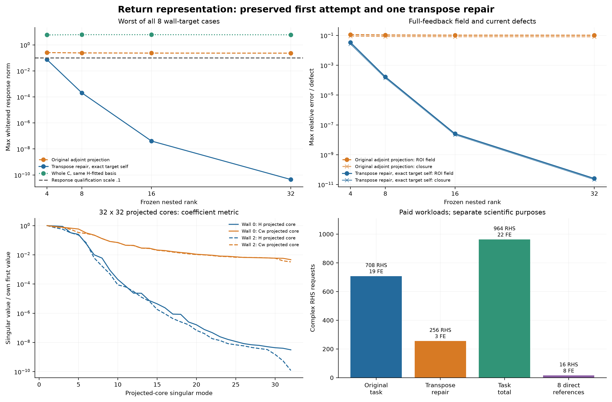

RESEARCH W-GQ-R2 · 实际全波研究 · 2026-10-29
墙体材料可以不准，
目标仍能被分辨吗？
新的二维 Maxwell 正例与反例同时成立：微观材料很不一样，有限目标族的传播仍可近似等效；但更丰富的墙体补偿，也能掩盖目标位移。
裁决：目标分辨率的物理主线值得继续；一般未知墙在线成像和新的 Bayesian 净加速尚未建立。
1.13137两纹理墙内材料 RMS 差
0.159971held-out 目标族最大白化传播差
0.079224 λ₀受控有限参考的位置均值 RMSE
722 / 5212实际 FE / complex RHS
阅读完整中文报告 → 给 GPT Pro 的交接 → 下载完整复现包 →
材料不同，目标传播仍接近
两个宏观非均匀墙体，其中一个有不规则边界与空腔；两种微结构共享局部平均材料。网格逐条解析微结构界面。材料差保持显著，传播差随尺度下降；最细层覆盖 12 个 held-out 目标、四发三频。独立细化支持有限离散任务的近等效，不是连续目标族的统一证明。

目标准确，与墙细节仍未知可以共存
在明确的 4 墙×12 目标有限 prior 中，位置均值 RMSE 降至 0.079224 λ₀，而墙纹理熵仍为 0.998388 bit。这是受控参考；另一个未知宏观墙在线模型的 RMSE 为 0.68343 λ₀，失败不能被参考成功覆盖。

反例：新增测量不保证排除重新补偿
目标横移 0.05 λ₀，合法墙材料重新优化后，四发三频白化距离在三层离散上为 0.889152 / 0.912855 / 0.913910。它支持有限噪声尺度歧义；不是连续 PDE 的精确相等或全局最优证明。

返回传播可压缩，净加速还没有证据
保留精确目标自散射，只压缩墙返回，rank 8 最坏白化误差约 2.05×10⁻⁴。但构建与审核真实消耗 964 RHS / 22 FE；旧 118 墙 bank 的条件共识没有通过。没有把低 rank 或表查询减少写成冷部署加速。
